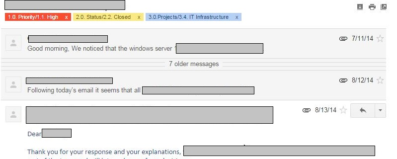
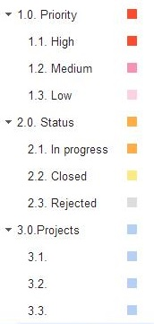
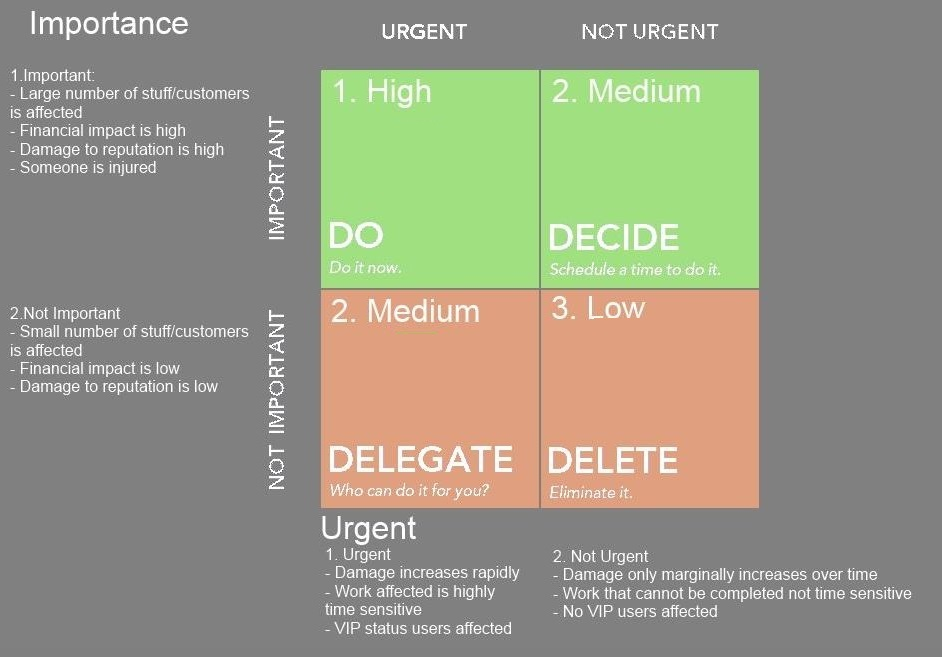

Con's place
Con's place
Gmail Issue Tracking System
Posted on • Tagged with productivity

One of the most demanding task in my work place is handling the various issues that are related to the IT systems we maintain. So I was asked to come up with a method of tracking these issues with the limited resources that we have. That means that we had to implement a method that would need no additional starting cost, no recurring fees, little administration and maintenance time, be implemented and used by the whole team, be future proof, efficient, and oh I forgot, had to be implemented immediately … as always.
I had previously tried to introduce some sort of tracking system such as Truc, Redmine, Bugzilla or even Evernote but the administration time needed was too high. In our case we only had about 0-30 mins per day available for administering the tracking system, and given that we had only a few people in our team serving a lot of users and administering a lot of systems, the method should allow for anyone in our team to be an administrator.
Also I had to take into consideration that our users, business partners, vendors and even team members were used to using either telephone or email as their main method of communicating these issues, and the fact that everyone believes that their issue is of the highest priority … again as always :-).
Weapon of choice
As I said before one of the main communication methods is email, so immediately email became the obvious choice as a method of input. Since we wanted to access it from anywhere and have the same categories everywhere for categorization, webmail seemed more appropriate. Gmail has 2 nice features that help in grouping issues and categorization, conversations and labels.
Grouping and Categorization

mails that share the same title get grouped into the same conversation in gmail, making grouping emails regarding the same issue a piece of cake (Re: or Fw: preceding the title also apply so replies and forwards are grouped in the same conversation). This means that all you have to do to keep track of all the communication concerning an issue into one conversation, is reply the same email and cc to the specific gmail address.
Labels on the other hand can be considered as folders or categories, but in Gmail you can apply multiple labels on one email, making more complex categorization.
In creating the labels structure we had to consider the way we were going to be searching for issues in the future. As always categorization, search and retrieval had to be an easy task for everyone. Here are the categories we use:
- 1. Priority
- 1.1 High
- 1.2 Medium
- 1.3 Low
- 2. Status
- 2.1 In Progress
- 2.2 Closed
- 2.3 Rejected
- 3. Project
- 3.1 Project 1
- 3.2 Project 2
- 3.3 Project 3

You could pretty much add any category or dimension you like but in our case we decided it is best we keep it as simple as possible. Also keep in mind that the more labels you add the less space is left for the title of the conversation to be shown on gmail’s email list. We also like to use colors in our labels to emphasis the status and priority.
As mentioned before one can assign multiple labels to each group of emails that regard the same issue (a.k.a conversation). So for example a conversation can have the following labels:
1.2. Medium, 2.1. In Progress, 3.1. Project A
Search and retrieval
Finding the issues is really easy as well. You can just click on the appropriate label , i.e. “2.1. In Progress” to see all pending issues, or use gmail`s advanced search syntax , i.e.”label:2.1. In Progress, label:1.2. Medium” for more advanced filtering.
We also remove the emails from the inbox once they get categorized for better administration. In this way the administrator can access the inbox and see all new emails. All he/she has to do is assign the right labels (if not already assigned) and remove it from the inbox (which by the way is handled by google as just another label).
Another default functionality of basically every email client/service is the date received which can also be used when finding and retrieving issues.
Prioritization
Now this is the a big topic. Everyone and I mean EVERYONE believes that hers/his issue should have the highest priority. That of course would mean you would have to treat all issues equally and as a result have to treat them all concurrently. I don’t have to tell you the amount of resources you would need in order to tackle all issues at the same time, and not to mention that even if you had limitless amount of professionals and money, it would be a terrible waist of time not to utilize them in a more efficient way.
So we use the Eisenhower Matrix method, just like explained in the Eisenhower Matrix with Evernote post

Methodology
So I once again turned to the GTD methodology and specifically to the whole inbox / categorization point. The idea is to input all the issues from all the different sources into one global inbox and to categorize them at a later stage during the day. The input method is as described above, simply by ccing the gmail’s email address, either when initiating a conversation or replying to it.
It is important that all parties understand that they should always include the specific email address in their CC(or TO doesn’t actually make any difference to gmail). In this way you can have a nice history of the issue from user, IT stuff, vendor etc.
It is also a good idea to have some kind of naming policy, i.e. “Proj A – Issue”, but to be honest its hard enough to get everyone to simply include the specific email in their CC.
Now every once in a while during the day an administrator should check the inbox and categorize the emails. If something is deemed as High Priority the administrator must alert the appropriate stuff or vendor so that the issue is handled as soon as possible.
The administrator should at least once a day review the Medium Priority issues that were not assigned to anyone, alert the appropriate stuff or vendor and make a schedule on when the issue should be handled. Any unassigned or unhanded issues could be to addressed in a weekly IT stuff meeting.
The Low Priority issues, even though the matrix says delete them, a better alternative would be to review those issues in a monthly basis.
The issues should be assigned to the IT personnel at least Twice a day and a weekly meeting should be held to review the progress of the issues.
Overview
Looking back to this approach, one can recognize both the strengths and weaknesses. For one this is not a complete issue tracking solution for sure. It is not easy to get statistics, measure performance or integrate different dimensions to the system such as vendors or systems and components with gmail. On the other hand it can be setup really fast, its reliable, needs little administration time and the users can adopt the method easily. A more hybrit approach would be optimal, where you have a good issue tracking system (say Bugzilla) integrated with emails. It is though a good approach to keep on top of things and get from zero … well to somewhere at least :-).